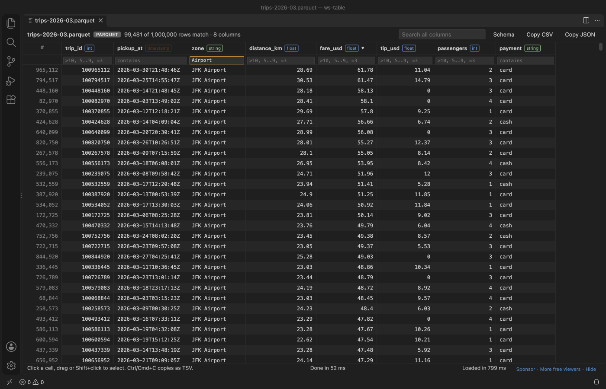

Open files in VS Code and Cursor / Tables and data
Open a Parquet file in VS Code
Install the free Table Viewer extension and click the .parquet file. It opens as a table with the type of each column in its header. The Schema button shows row groups, compression and key-value metadata. Nothing else has to be installed: no Python, no pandas and no kernel.
Free, MIT license. Extension ID zovo.table-viewer-vscode, version 0.4.1. Needs VS Code 1.90.0 or newer.

Steps in VS Code
- Install Table Viewer from the Marketplace, or press Ctrl+P (Cmd+P on macOS) and run
ext install zovo.table-viewer-vscode. - Click any
.parquetor.pqfile in the Explorer. It opens as a table. - Click Schema to see physical and logical types, row groups and compression.
- Sort and filter as in a spreadsheet. Copy a selection as CSV or JSON.
Steps in Cursor, Windsurf or VSCodium
- Open the Extensions view with Ctrl+Shift+X (Cmd+Shift+X on macOS).
- Search for
zovo.table-viewer-vscodeand click Install. Cursor, Windsurf and VSCodium install from Open VSX, where it is published aszovo/table-viewer-vscode. - If your editor has no gallery, download the .vsix from the Open VSX page and run "Extensions: Install from VSIX...".
- Then use it the same way as in VS Code.
What Table Viewer handles
- On an M-series Mac a 1,000,000 row Parquet file loaded in 0.8 s (README screenshot).
- Up to 5,000 columns, drawn only where you look.
- Nested values open as indented JSON in the cell panel.
What it does not do
- Read-only. It loads up to 1,000,000 rows by default and shows a banner when the file has more.
- Very large integers are kept as text so no digits are lost.
Other options
- parquet-viewer (
dvirtz.parquet-viewer, 447,971 installs, on Open VSX). Its own description: "Views Apache Parquet files as JSON". - Data Wrangler (
ms-toolsai.datawrangler, 2.4 million installs, not on Open VSX). Opens Parquet through a Python kernel with pandas. Good when you want to transform the data. - DuckDB. On the command line,
duckdb -c "SELECT * FROM 'file.parquet' LIMIT 20"prints the first rows.
Install counts and Open VSX status were checked on 8 November 2026. Descriptions in quotes are the extensions' own.
Questions
Can I query a Parquet file with SQL in VS Code?
Table Viewer has column filters but no SQL yet. DuckDB on the command line is the quickest SQL option.
Does it work in Cursor or VSCodium?
Yes. It is published on Open VSX as zovo/table-viewer-vscode.
Is it private?
It makes no network requests and has no telemetry. The file is read on your machine.
More about Table Viewer
Read the Table Viewer page for every feature and setting, or the source code on GitHub.
Related guides
- Open an Excel .xlsx file in VS Code
- Open an Excel file in Cursor
- See a CSV file as a table in VS Code
- Open a SQLite database in VS Code
Support this work
If this extension saves you time, you can support the work on GitHub Sponsors. Monthly tiers start at $5, and one-time tiers start at $15. Sponsorship is optional, and the tool works the same without it.